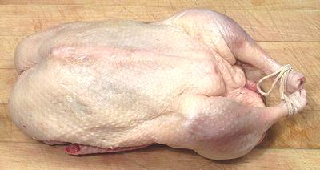
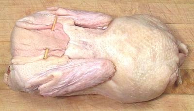

Ready to go, breast side. The tail is tucked into the body cavity and the
legs tied for neatness - and to keep the tail in place.

Ready to go, back side - showing neck skin pinned to the back. The wings
are also secured to the body with small skewers and have the tip section
cut off.